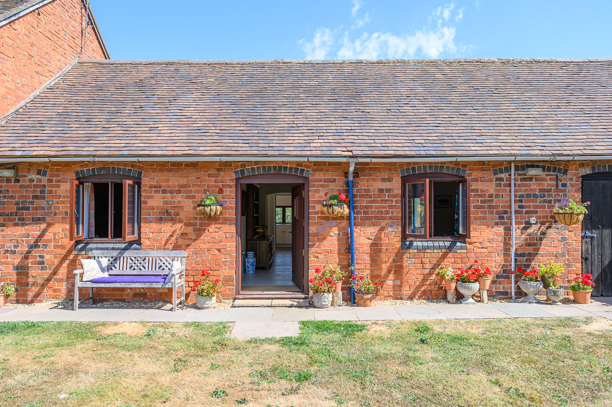
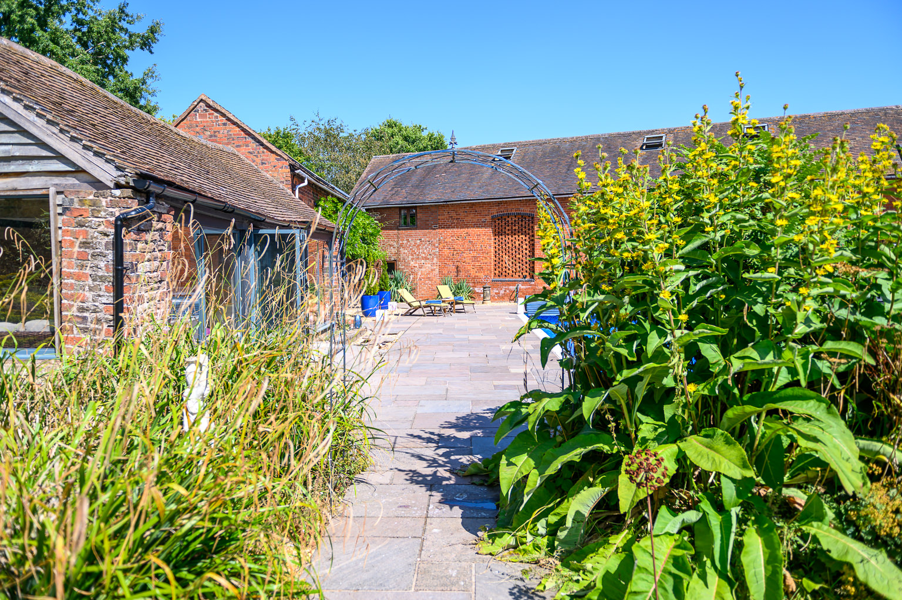
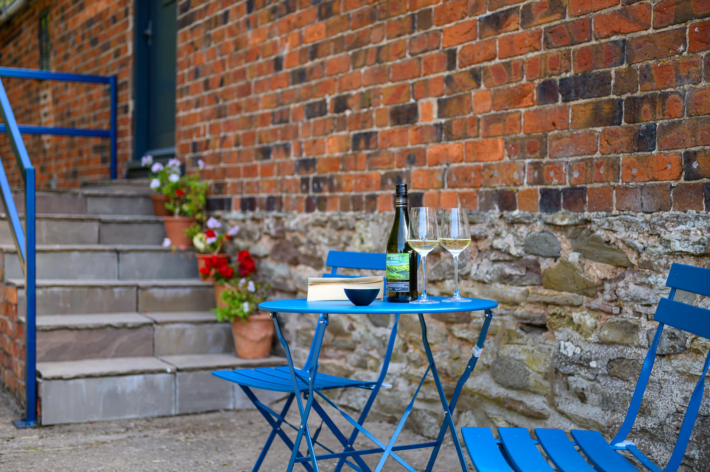
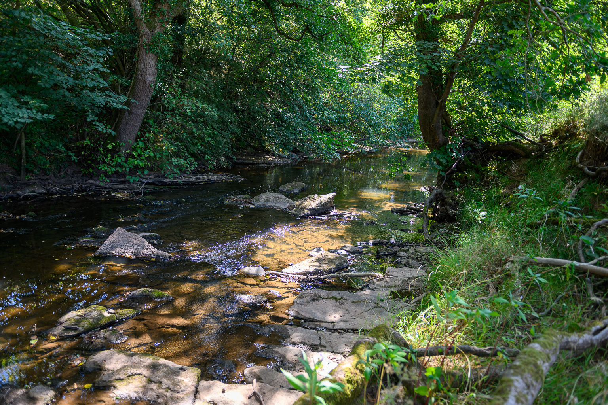
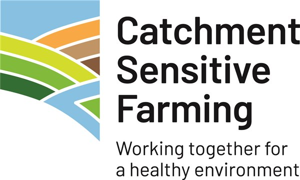

Kingfisher
A ground-floor cottage with a well-equipped kitchen/diner, cosy sitting room and its own utility room, opening onto the shared garden and pool.
Discover KingfisherThe perfect relaxing retreat to explore the Shropshire countryside, with two beautifully converted cottages set on a 100 acre working farm.
Reaside Farm sits on a bend of the River Rea, bordered by water on three sides, with two kilometres of riverbank to explore right from your door. It's home to Jacob sheep, horses, donkeys and peacocks, as well as hares, buzzards, red kites, dippers and, fittingly, kingfishers along the water.
The Hayloft and Kingfisher are our two self-catering cottages, converted from farm buildings with exposed beams and bags of character. Guests share the heated outdoor pool, the formal gardens and wildlife pond, and plenty of off-road parking, while James and Olwen, who live on site in the farmhouse, are on hand whenever you need anything.
Our Story
Two independent cottages, each with its own character and both sharing the same 100 acres of farm and riverbank.

A ground-floor cottage with a well-equipped kitchen/diner, cosy sitting room and its own utility room, opening onto the shared garden and pool.
Discover Kingfisher
Full of original beams and farmyard charm, with a bright kitchen/diner and comfortable sitting area, just a few steps from the pool and gardens.
Discover The HayloftOur shared outdoor pool is open from mid-May to mid-September, with loungers and a pergola for shade.
100 acres of farmland and riverbank on your doorstep, with wildlife to spot at every turn.
Fresh linen, towels and pool towels included, with WiFi, Smart TV and central heating throughout.
James and Olwen live in the adjacent farmhouse and are always happy to help during your stay.
A cosy retreat for rainy days, with puzzles, games, a smart TV and underfloor heating.
Due to the resident animals and birds, we're unable to accept guests' pets, though you're welcome to meet ours: sheep, horses, donkeys and peacocks around the grounds.
The River Rea wraps around the farm on three sides, and you are free to wander the banks, the gardens and the wildlife pond. Watch for hares in the fields, buzzards and red kites overhead, and dippers and kingfishers along the water.
Closer to the cottages you'll find the pergola, loggia and heated pool, sun loungers scattered across the lawn, and our resident peacocks strutting about as if they own the place.
Explore Guest Info
Check availability for Kingfisher and The Hayloft, or get in touch if you have any questions before you book.
We gratefully acknowledge the guidance and support from the following organisations.
